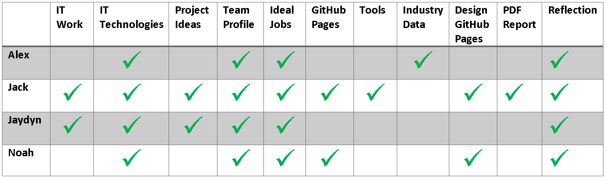

Tools
Assignment Credit: Jack Harris
Overview
For this assessment we have used several fantastic tools to function as an effective team, these have included MS Teams, Trello, and GitHub for version control. Over the last couple of weeks, we have efficiently used these tools to assist us in the creation of this assessment and function amazingly well as a team.
For the final submission and Website hosting we are using GitHub.io
** Trello was used for project management and logistics as it is a industry standard tools for managing teams and projects, it provides features and requirements that we need that MS Teams cant deliver.**
Tools Used
- Trello
- Microsoft Teams
- Github
- Github Pages
Quick Links
Assignment Credits

Microsoft Teams - Meetings
Web Cameras are not in effect when screen sharing was in use due to some team members having slow internet connections
PLACEHOLDER MEETING 25/03/2021
- Recording
- Agenda - ADD
- Actions - ADD
- Webcams
- ScreenSharing
- 00:00 - ADD
Trello - Project Management
ADD LATER
Trello Reflection
ADD LATER

Github Commit Overview
ADD LATER
GitHub Reflection
ADD LATER
Example screenshots taken from GitHub commit logs
MS Teams - Team Communication
ADD LATER
MS Teams Reflection
ADD LATER